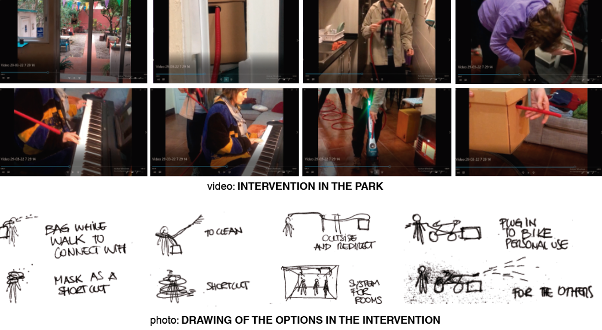
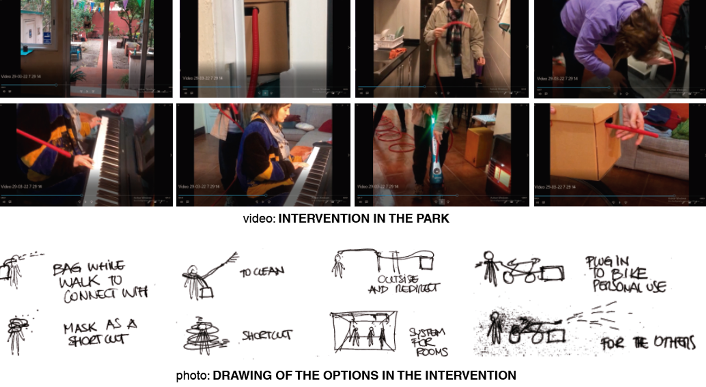

3ER INTERVENTION OF TERM 2
CONTEXT
This is the evolution of the intervention 2 "HOLISTIC CONNECTIONS WITH FRUITS”, and the bond created by those experiences with the materiality through the smells of the beings.
THE SMELLS
After the last intervention, emerge the possibility to explore the smells from different proceses, and not just by having a fruit close to your nose, or as the holistic people said: sometimes is just a memory of how it smells. When we bake some fruits, when we prepare essence oils, or tinctures, it smells as well. And it is a process not just referring to fruits or vegetables, it is used with plants and flowers as well.
THE INTERVENTION
The intervention is about how we can extract smells through a solar artifact, like a dehydrator. And the redirection of it to whatever place we want. How portable it might be, and speculate regarding how these experiences might or not change our habits. In addition, this intervention is merge with the intervention 2, to continue collecting data, experiences and feedbacks from the participants.
THE CIRCULARITY
The intervention showed how we can connect with our food with respect, as a ritual, and be part of the process since we have it before eating, and how it can extract smells that might work as therapy after. Besides, the possibility of create artifacts with meaning and smells.
FEEDBACK FROM HOLISTIC COMMUNITY
Each of the following items is related to each holistic participant.
+ To clean, how it can harmonize my rooms and change my mood.
+ As a shortcut to feel certain emotions in a personal practice.
+ To spray smell to others while riding a bike.
+ To maximize the already existing smell for a stand.
+ As a bagpack to use while walking.
+ As a mask with colors related to reiki o play around the city. Like a carnaval.
+ Before starting a Reiki session, depending on each person it requires a certain mood.
+ In the backyard, and have a house system.
+ An object to put in my window.
FEEDBACK FROM DESIGN DIALOGUE
+ It could be an artifact to butterflies or other non-humans.
+ It seems a personal and individual project, it might include others if that is what I'm looking for, some people don't understand.
RESULTS
+ The artifact wasn´t work due to the climate during the days of intervention.
+ While testing the types of the essence in the local market to induce alternatives of smells I notice that the most similar approaches were by baking it,
or directly to the fruits.
+ In order to make efficient essence oil, it has to be an artisanal process. Otherwise, it distorts the aroma.
+ The possibilities of new artifacts of daily practices holistic or not.
+The more portable might be the effect the better to continue testing it.
NEXT STEPS
+ Test artifacts using technology based on the results of the intervention. The main function of these artifacts ought to be
transferring smell to people.
+ Generate artifacts with biomaterials and fruits or cellulose. And try to maintain the aroma to continue testing.
REFLECTIONS AND QUESTIONS
+ After reflecting on the cognitive process that smells produce in people, in interesting on try with other senses.
+ How can I express physical all these collected data?
+ The whole process is based on individual performance and cognitive process, how it could be applied to a collective one, could it change?
+ Some feedback from the first participants from many months ago is recently appearing and joining the process.
DOCUMENTATION
 
